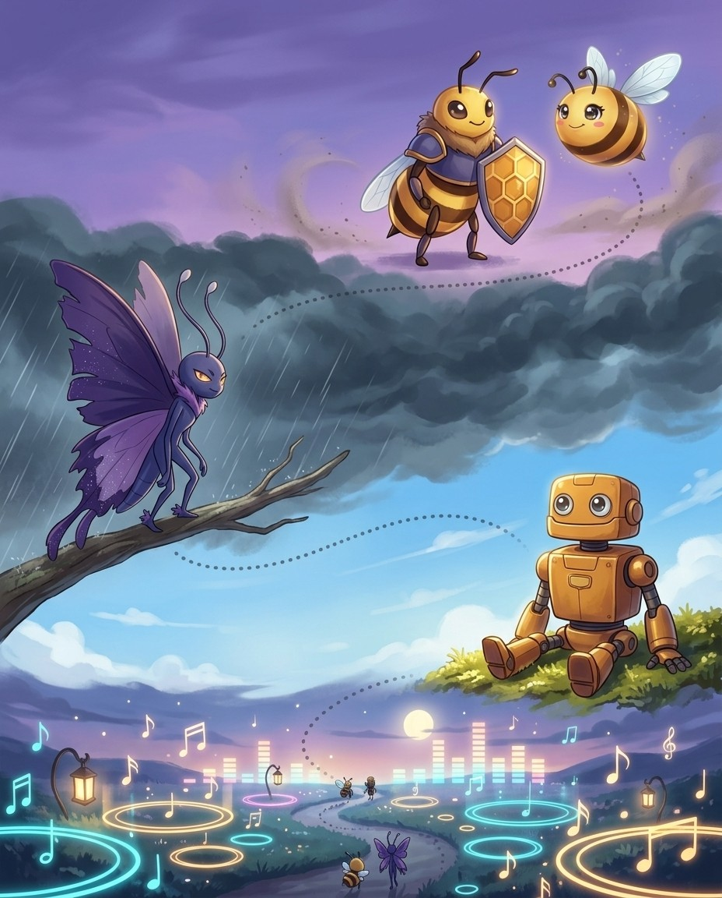
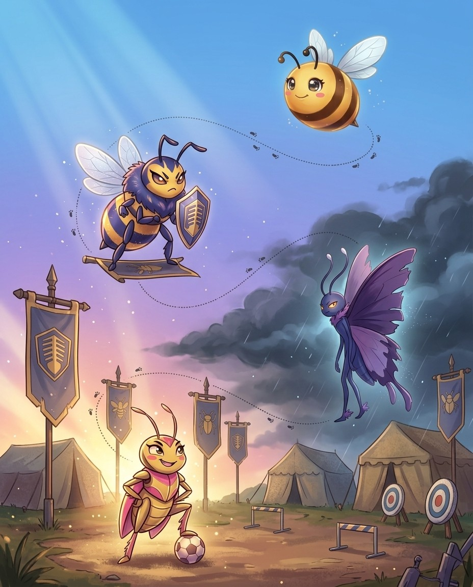
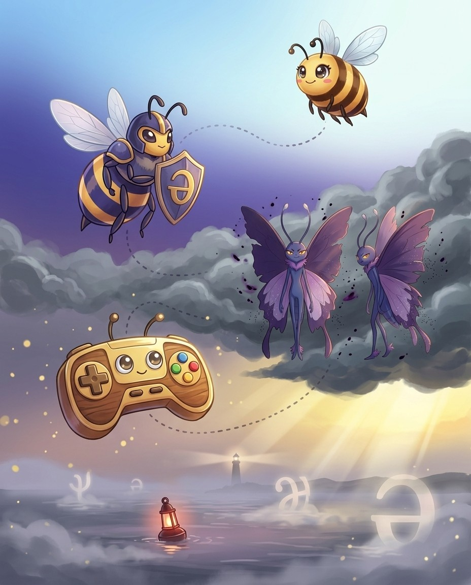

7 chapters127 practice wordsquizzes & puzzles throughout
Bizzy & Propolis in the Word Junkyard Back to the Junkyard — this time for the letters that lie, double and vanish.
Letters Behaving BadlyHow this book works
Five moves. That's the whole system.
I'm Propolis. Doubles, silents and sounds that lie. Nothing in this book is filler — if a page is here, a real speller lost a real word without it.
1
Read the story
Each chapter opens as a storyboard. Vex sets the trap; the crew talks you out of it.
2
Steal the pro move
The dark box is how a champion thinks on stage. It works on brand-new words too.
3
Spell out loud, then write
Say it, spell it aloud, write it. The order matters — it is how the stage will ask for it.
4
Pass the checkpoint
The same questions the app gates this chapter with — at 90%. Circle, then verify at the back.
5
Play the puzzle, hunt the Big List
Every chapter ends in a game built from its own words, and the back holds every word in the book. Circle what you own.
🔊 Grown-ups: every chapter is narrated, and every word recorded, in the Bizzing Bee app
the Word Junkyard
Bizzing Bee · Letters Behaving Badly1
Letters Behaving BadlyThe cast
Bizzy — and this book's guide, Propolis
The crew of Vol. 13
The ensemble for this volume. They host the drills and checkpoints; the work is still yours.
Bizzy — The little bee who spells the world back together, one petal at a time. · Propolis — The hive’s healer and handy-bee.
1-UP
OVR 76
Champion of the Arcade · Unflappable
One more life, one more word — never game over.
Mech
OVR 70
Champion of the Speedway · Power Core
A giant machine with a spelling heart.
Cabinet Ghost
OVR 66
Speller of the Arcade · Power Core
Haunts the maze, chasing the next word.
Striker
OVR 52
Speller of the Speedway · Fast Forward
Always first to the finish line.
D-Pad
OVR 52
Speller of the Arcade · Unflappable
Up, down, left, right — always knows the way.
Hover
OVR 69
Champion of the Speedway · Unflappable
No wheels, no limits.
Neon King
OVR 79
Grandmaster of the Arcade · Power Core
Rules the arcade in electric light.
Rally
OVR 57
Rookie of the Speedway · Deep Knowing
Reads the road and never misses a turn.
And the other one
Vex, the word-moth. Every trap in this book is one it has watched a speller fall into on a real stage.
Bizzing Bee · Letters Behaving Badly2
WELCOME TO
The Word Junkyard
Back to the Junkyard — this time for the letters that lie, double and vanish.
Bizzing Bee · Letters Behaving Badly3
Chapter 1 · Silent finishes — words ending -gm and -gnStory · ★★★
1
Advanced Orthography
Silent finishes — words ending -gm and -gn
📍 the Word Junkyard
BizzySome words end in a g that makes no sound at all. Paradigm. Phlegm. Diaphragm. Benign. Campaign. Impugn. If you spell only what you hear, every one of these comes…
Propolis · Vex is circlingNow the honest exception. Sovereign and foreign have a g that never belonged to them. Sovereign came from Latin super, foreign from foras, meaning outdoors, and neither had a g.…
1-UPHere is the test, and it is the whole chapter. Say the word with a suffix on it. Paradigm becomes paradigmatic, and the g comes back. Phlegm becomes phlegmatic, and…
D-PadThe g m words are Greek, from roots where gamma and mu sat side by side. Paradeigma, an example, gives paradigm. Phlegma, inflammation, gives phlegm. Diaphragma, a partition, gives diaphragm.…
🔊 narrated in the appturn the page — the whole trick, explained →
Bizzing Bee · Letters Behaving Badly4
Chapter 1 · Silent finishes — words ending -gm and -gnThe idea · ★★★
The big idea
A small set of words ends in a written g you cannot hear: paradigm, phlegm, benign, campaign, impugn. The g is not decoration — it was pronounced in Latin and Greek, and it comes back the moment a suffix is added. That is the whole strategy for this pattern. If you can find a relative in which the g is audible, the g belongs in the base word, and if you cannot, it probably does not.
The pro move
PARADIGM
Heard. PAIR-uh-dime — the final g is silent
Test. say the adjective — paradigmatic, and the g comes back
Verdict. the audible g in the relative proves the silent g in the base
Spell. P A R A D I G M
Family. paradigmatic, paradigmatically
The derivative test
This is the only tool you need. Paradigm hides its g, but paradigmatic says it. Phlegm hides it, phlegmatic says it. Diaphragm hides it, diaphragmatic says it. Malign hides it, malignant says it. Benign hides it, benignity says it. Sign hides …
The -gm group
The -gm words are Greek, from roots where gamma and mu sat together: paradigm from paradeigma, an example; phlegm from phlegma, inflammation; diaphragm from diaphragma, a partition; apothegm from apophthegma, a terse saying; borborygm from bor…
The -gn group
The -gn words are mostly Latin. Benign and malign from benignus and malignus. Deign from dignare, to think worthy. Feign from fingere, to shape. Impugn and oppugn from pugnare, to fight. Arraign from ad rationem, to call to account. Campaign f…
Sovereign and foreign are traps
Two words in the group have a g that is historically fake. Sovereign comes from Latin super and had no g; foreign comes from foras, outdoors, and had no g either. Scribes added the g to both by false analogy with reign. So the derivative test …
Vex alert
The g is silent at the end but speaks again when a suffix follows: paradigm but paradigmatic, malign but malignant. The…
Sound trap
deign sounds like dane · feign sounds like fain, foehn — at the mic, always ask for the meaning.
Check yourself
Book closed: paradigm · diaphragm · apothegm, out loud, full words. At this level, almost right is still an elimination.
💬
Bee Break · someone said it better
“Be present in all things and thankful for all things.”
— Maya Angelou, American poet and author
Bizzing Bee · Letters Behaving Badly5
Chapter 1 · Silent finishes — words ending -gm and -gnPractice · ★★★
Say it. Spell it out loud. Write it.
🔊 every word has real audio in the app
paradigm
/ PEH-ruh-deyem / · /ˈpɛrədaɪm/
systematic arrangement of all the inflected forms of a word
hook: The g is silent at the end but speaks again when a suffix follows: paradigm but paradigmati…
Our grammar book shows the full ▁▁▁ of the verb, listing every changed form.
diaphragm
/ d-AY-uh-f-r-a-m / · /dˈeɪəfræm/
a part of the human body
hook: The g is silent at the end but speaks again when a suffix follows: paradigm but paradigmati…
The new cameras adjust the ▁▁▁ automatically.
apothegm
/ AP-uh-them / · /ˈæpəθɛm/
a short pithy instructive saying
hook: The g is silent at the end but speaks again when a suffix follows: paradigm but paradigmati…
Benjamin Franklin was famous for crafting an ▁▁▁ that could teach a lesson in just a few clever words.
phlegm
/ FLEHM / · /ˈflɛm/
apathy demonstrated by an absence of emotional reactions
hook: The g is silent at the end but speaks again when a suffix follows: paradigm but paradigmati…
borborygm
/ BOR-boh-rigm / · /ˈbɔrboʊrɪɡm/
A rumbling or gurgling noise produced by gas moving through the intestines; the technical t…
hook: The g is silent at the end but speaks again when a suffix follows: paradigm but paradigmati…
During the completely silent exam, the student's loud ▁▁▁ echoed through the room, causing several clas…
benign
/ b-ih-n-AY-n / · /bɪnˈeɪn/
is having a kindly disposition
hook: The g is silent at the end but speaks again when a suffix follows: paradigm but paradigmati…
The doctor reassured the worried family that the small growth was completely ▁▁▁, explaining that it posed…
the Word Junkyard
Bizzing Bee · Letters Behaving Badly6
Chapter 1 · Silent finishes — words ending -gm and -gnPractice · ★★★
Say it. Spell it out loud. Write it.
🔊 every word has real audio in the app
malign
/ m-uh-l-AY-n / · /məlˈeɪn/
is to speak harmful untruths about
hook: The g is silent at the end but speaks again when a suffix follows: paradigm but paradigmati…
It is never kind to ▁▁▁ a classmate with rumors that aren't true.
condign
/ kun-DYNE / · /kʌnˈdaɪnɛ/
fitting or appropriate and deserved; used especially of punishment
hook: The g is silent at the end but speaks again when a suffix follows: paradigm but paradigmati…
The judge delivered ▁▁▁ punishment to the swindler who had robbed dozens of elderly victims.
deign
/ d-AY-n / · /dˈeɪn/
to think fit or to condescend
hook: The g is silent at the end but speaks again when a suffix follows: paradigm but paradigmati…
The famous chef did not ▁▁▁ to answer questions from food bloggers he considered beneath his level of exper…
feign
/ f-AY-n / · /fˈeɪn/
is to represent fictitiously
hook: The g is silent at the end but speaks again when a suffix follows: paradigm but paradigmati…
He ▁▁▁ that he was ill.
impugn
/ ih-MPYOON / · /ɪˈmpjun/
attack as false or wrong
hook: The g is silent at the end but speaks again when a suffix follows: paradigm but paradigmati…
The defense lawyer tried to ▁▁▁ the witness's testimony by pointing out several contradictions.
oppugn
/ uh-PYOON / · /əˈpjun/
challenge the accuracy, probity, or propriety of
hook: The g is silent at the end but speaks again when a suffix follows: paradigm but paradigmati…
The defense attorney rose to ▁▁▁ every claim the witness made, pointing out inconsistencies in the testimo…
the Word Junkyard
Bizzing Bee · Letters Behaving Badly7
Chapter 1 · Silent finishes — words ending -gm and -gnRapid round · ★★★
More ammo — one line each.
eloign/ih-LOIN/ To remove or carry away to a distance; in legal contexts, to co…
arraign/er-AYN/ call before a court to answer an indictment
campaign/k-a-m-p-AY-n/ a military operation for a specific objective
ensign/EH-n-s-uh-n/ a flag or banner
countersign/KOWN-ter-syne/ a secret word or phrase known only to a restricted group
sovereign/s-AH-v-r-uh-n/ a monarch or a king
foreign/FAW-ruhn/ of concern to or concerning the affairs of other nations (other…
reassign/ree-uh-SEYEN/ transfer somebody to a different position or location of work
Lock them in
Pick 4 words from above. Say each one as you write it — three times, no shortcuts. The third copy is the one your hand remembers.
the Word Junkyard
Bizzing Bee · Letters Behaving Badly8
Chapter 1 · Silent finishes — words ending -gm and -gnCheckpoint · ★★★
Cabinet Ghost · Speller of the Arcade runs the checkpoint
Do you own the idea?
The Word Map gates this stop at 90%. That is five of six, minimum. Circle and verify. Cabinet Ghost's power is Power Core — borrow it.
1. Which of these is the big idea of “Silent finishes — words ending -gm and -gn”?
AA small set of words ends in a written g you cannot hear: paradigm, phlegm, benign, campaign, i…
BThe hardest thing about Chinese loanwords is that English has used two rival romanisation syste…
CEnglish borrowed from French for six hundred years, and French itself changed during that time …
DStress moves as suffixes attach, and whichever syllable loses the stress reduces to a schwa.
2. Which word belongs to this chapter's family?
Aberiberi
Bserendipity
Cparadigm
Dpneumonoultramicroscopicsilicovolcanoconiosis
3. The card “The derivative test” says…
ATwo words in the group have a g that is historically fake. Sovereign comes from Latin super and…
BThe -gn words are mostly Latin. Benign and malign from benignus and malignus. Deign from dignar…
CThe -gm words are Greek, from roots where gamma and mu sat together: paradigm from paradeigma, …
DThis is the only tool you need. Paradigm hides its g, but paradigmatic says it. Phlegm hides it…
4. “The g is silent at the end but speaks again when a suffix follows: ▁▁▁ but ▁▁▁atic, malign but malignant. The derivative proves the g.” — which word is this hook about?
Aphlegm
Bdiaphragm
Cparadigm
Dapothegm
Dictation round
Hand this page to anyone nearby. They read the words from the answer key (Ch. 1 dictation, at the back) — you write, no peeking.
1.
2.
Bizzing Bee · Letters Behaving Badly9
Chapter 1 · Silent finishes — words ending -gm and -gnGame · ★★★
Mech's puzzle page
Crossword
I own this
1
2
3
4
5
6
7
8
9
10
Across
4. is to speak harmful untruths about
5. a part of the human body
8. fitting or appropriate and deserved; used especially of punishment
9. apathy demonstrated by an absence of emotional reactions
10. is having a kindly disposition
Down
1. A rumbling or gurgling noise produced by gas moving through the intestines;…
2. is to represent fictitiously
3. systematic arrangement of all the inflected forms of a word
6. a short pithy instructive saying
7. to think fit or to condescend
✨
Bee Break · simile of the page
run like a well-oiled machine
to work perfectly without friction
Bizzing Bee · Letters Behaving Badly10
Chapter 2 · -cide — the killing wordsStory · ★★★
2
Advanced Orthography
-cide — the killing words
📍 the Vibe

BizzyLatin caedere meant to cut down, and from cutting down it came to mean killing. English turned it into an ending that does two jobs at once — it names…
PropolisMolluscicide is the showpiece, because the root keeps its own c. Mollusc ends in c, then comes the connecting i, then c i d e. So you get two c…
MOLLUSCICIDE
Propolis · Vex is circlingHere is where marks go. Latin joined the root to the ending with an i, and spellers write an a. Herbicide, not herbacide. Fungicide, not fungacide. Larvicide, not larvacide. Every…
LARVICIDE
HoverThe root tells you who or what dies. Rex, a king, gives regicide. Mater, a mother, gives matricide. Frater, a brother, gives fratricide. Vermis, a worm, gives vermicide. Acarus, a…
🔊 narrated in the appturn the page — the whole trick, explained →
Bizzing Bee · Letters Behaving Badly11
Chapter 2 · -cide — the killing wordsThe idea · ★★★
The big idea
Latin caedere meant to cut down, and by extension to kill. English uses -cide both for the act and for the agent that does it, joined to the root with an i. The adjective is regularly -cidal. The single real confusion is that a different Latin verb, cadere, to fall, produces the same letters in words like coincide and decide, where nothing is being killed at all — and those words never take a -cidal form.
The pro move
MOLLUSCICIDE
Heard. muh-LUSS-ih-side — a substance that kills molluscs
Parse. mollusc + i + cide
Trap. the c of mollusc stays, so there are two c letters before the ending
Spell. M O L L U S C I C I D E
Family. molluscicidal, mollusc, molluscan
Agent or act
The same ending does two jobs. As an act: regicide the killing of a king, matricide of a mother, patricide of a father, parricide of a close relative, fratricide of a brother, liberticide of liberty. As a substance that kills: pesticide, herbi…
The joint is i
Latin joined the root to caedere with an i, and that i is the letter to watch. Herbicide, not herbacide. Fungicide, not fungacide. Larvicide, not larvacide. Acaricide, from acarus, a mite. Vermicide, from vermis, a worm. When you build one of …
The adjective is -cidal
Add -al and the c stays soft because the i is still there: homicidal, suicidal, genocidal, fungicidal, herbicidal, bactericidal, germicidal, molluscicidal, barmecidal. There is no -cideal and no -cidial. Just drop the final e and add al.
The other -cide
Latin cadere, to fall, is a different verb entirely, and it gives coincide, to fall together, and decide, to cut off deliberation — plus incident, accident and occident, which are all about falling. Coincide and decide have no -cidal form, and…
Vex alert
Latin caedere = to cut down or kill. The joint is i, the noun is -cide, the adjective -cidal. Do not confuse it with -c…
Sound trap
larvicide sounds like larvacide — at the mic, always ask for the meaning.
Check yourself
Book closed: molluscicide · liberticide · parasiticide, out loud, full words. At this level, almost right is still an elimination.
🎈
Bee Break · idiom to drop at dinner
a kind word opens iron gates
gentle words can win over even the hardest people
Bizzing Bee · Letters Behaving Badly12
Chapter 2 · -cide — the killing wordsPractice · ★★★
Say it. Spell it out loud. Write it.
🔊 every word has real audio in the app
molluscicide
/ moh-LUS-ih-syd / · /moʊˈlʌsɪsaɪd/
A chemical substance or agent used to kill mollusks, such as snails and slugs, particularly…
hook: Latin caedere = to cut down or kill. The joint is i, the noun is -cide, the adjective -cida…
The farmer applied a ▁▁▁ to the garden to protect his crops from slugs and snails.
liberticide
/ lih-BER-tih-syd / · /lɪˈbərtɪsaɪd/
The destruction or killing of liberty; also, a person who destroys or suppresses the freedo…
hook: Latin caedere = to cut down or kill. The joint is i, the noun is -cide, the adjective -cida…
The historian called the oppressive new law a ▁▁▁ that crushed the citizens' basic freedoms.
parasiticide
/ pair-uh-SIT-ih-syd / · /pɛrəˈsɪtɪsaɪd/
A substance or agent that destroys parasites; any chemical, drug, or treatment used to kill…
hook: Latin caedere = to cut down or kill. The joint is i, the noun is -cide, the adjective -cida…
The veterinarian prescribed a ▁▁▁ to rid the dog of fleas and ticks.
cancericidal
/ kan-SAIR-ih-SY-dul / · /kænˈsɛrɪˌsaɪdʌl/
Capable of destroying or killing cancer cells; describing an agent or treatment that acts d…
hook: Latin caedere = to cut down or kill. The joint is i, the noun is -cide, the adjective -cida…
Researchers were excited to discover that the new compound had powerful ▁▁▁ properties in laboratory…
barmecidal
/ bar-mih-SY-duhl / · /bɑrmɪˈsaɪdəl/
generous in appearance but giving nothing at all
hook: Latin caedere = to cut down or kill. The joint is i, the noun is -cide, the adjective -cida…
The offer turned out to be ▁▁▁.
monosilicide
/ mon-oh-SIL-ih-syd / · /mɑnoʊˈsɪlɪsaɪd/
a compound of one silicon atom joined to one metal atom
hook: Latin caedere = to cut down or kill. The joint is i, the noun is -cide, the adjective -cida…
Engineers used ▁▁▁ coatings to protect the surface of the microchip from heat damage.
the Vibe
Bizzing Bee · Letters Behaving Badly13
Chapter 2 · -cide — the killing wordsPractice · ★★★
Say it. Spell it out loud. Write it.
🔊 every word has real audio in the app
insecticide
/ ih-NSEH-ktuh-seyed / · /ɪˈnsɛktəsaɪd/
a chemical used to kill insects
hook: Latin caedere = to cut down or kill. The joint is i, the noun is -cide, the adjective -cida…
The farmer sprayed ▁▁▁ on the crops to protect them from the swarms of beetles.
pesticide
/ p-EH-s-t-uh-s-ay-d / · /pˈɛstəseɪd/
a chemical preparation to destroy pests
hook: Latin caedere = to cut down or kill. The joint is i, the noun is -cide, the adjective -cida…
The farmer carefully applied ▁▁▁ to protect his crops from the destructive beetles.
acaricide
/ uh-KAR-ih-syd / · /əˈkɑrɪsaɪd/
a chemical agent used to kill mites
hook: Latin caedere = to cut down or kill. The joint is i, the noun is -cide, the adjective -cida…
The farmer applied an ▁▁▁ to protect the apple trees from a damaging mite outbreak.
vermicide
/ VUR-mih-syd / · /ˈvʌrmɪsaɪd/
an agent that kills worms (especially those in the intestines)
hook: Latin caedere = to cut down or kill. The joint is i, the noun is -cide, the adjective -cida…
The veterinarian prescribed a ▁▁▁ to rid the puppy of the roundworms living in its intestines.
fungicide
/ FUH-njuh-seyed / · /ˈfʌndʒəsaɪd/
any agent that destroys or prevents the growth of fungi
hook: Latin caedere = to cut down or kill. The joint is i, the noun is -cide, the adjective -cida…
The farmer sprayed a powerful ▁▁▁ on his grape vines to prevent mold from ruining the harvest.
germicide
/ JUR-muh-seyed / · /ˈdʒʌrməsaɪd/
an agent (as heat or radiation or a chemical) that destroys microorganisms that might carry…
hook: Latin caedere = to cut down or kill. The joint is i, the noun is -cide, the adjective -cida…
The nurse wiped the counter with a powerful ▁▁▁ to ensure no harmful bacteria could survive.
herbicide/HUR-bih-seyed/ a chemical agent that destroys plants or inhibits their growth
larvicide/LAR-vuh-syd/ a chemical used to kill larval pests
matricide/MAY-truh-syd/ a person who murders their mother
parricide/PAIR-ih-syde/ someone who kills his or her parent
patricide/PAY-trih-syd/ a person who murders their father
regicide/REJ-ih-syd/ The killing of a king, or the person who kills one.
lousicide/LOO-sih-syd/ A chemical agent or treatment designed to kill lice.
coincide/koh-ih-NSEYED/ go with, fall together
Lock them in
Pick 4 words from above. Say each one as you write it — three times, no shortcuts. The third copy is the one your hand remembers.
the Vibe
Bizzing Bee · Letters Behaving Badly15
Chapter 2 · -cide — the killing wordsCheckpoint · ★★★
Striker · Speller of the Speedway runs the checkpoint
Do you own the idea?
The Word Map gates this stop at 90%. That is five of six, minimum. Circle and verify. Striker's power is Fast Forward — borrow it.
1. Which of these is the big idea of “-cide — the killing words”?
AThe hardest thing about Chinese loanwords is that English has used two rival romanisation syste…
BStress moves as suffixes attach, and whichever syllable loses the stress reduces to a schwa.
CLatin caedere meant to cut down, and by extension to kill.
DEnglish borrowed from French for six hundred years, and French itself changed during that time …
2. Which word belongs to this chapter's family?
Amolluscicide
Bberiberi
Cserendipity
Dpneumonoultramicroscopicsilicovolcanoconiosis
3. The card “Agent or act” says…
ALatin joined the root to caedere with an i, and that i is the letter to watch. Herbicide, not h…
BAdd -al and the c stays soft because the i is still there: homicidal, suicidal, genocidal, fung…
CLatin cadere, to fall, is a different verb entirely, and it gives coincide, to fall together, a…
DThe same ending does two jobs. As an act: regicide the killing of a king, matricide of a mother…
4. “Latin caedere = to cut down or kill. The joint is i, the noun is -cide, the adjective -cidal. Do not confuse it with -cide from cadere, to fall.” — which word is this hook about?
Amolluscicide
Bparasiticide
Cliberticide
Dcancericidal
Dictation round
Hand this page to anyone nearby. They read the words from the answer key (Ch. 2 dictation, at the back) — you write, no peeking.
“1-UP” means an extra life in video games — grab one and you keep playing after a mistake.
Bizzing Bee · Letters Behaving Badly17
Chapter 3 · -phagous and -phagy — the eating wordsStory · ★★★
3
Advanced Orthography
-phagous and -phagy — the eating words
📍 the Big Stage
BizzyGreek phagein meant to eat, and English built four different endings out of it. The adjective for a diet is p h a g o u s. The name of…
PropolisSo which ending? If the word describes a creature and its diet, use p h a g o u s. If it names the practice as a thing, use p…
Propolis · Vex is circlingThe first mistake is the easiest to fix. That f sound is a Greek phi, and English writes phi as p h. Never f. Phone, photo, physics, philosophy, sphere, graph…
SAPROPHAGOUS
Neon KingThe root tells you what is being eaten, and the roots are ordinary Greek nouns. Sapros, rotten, gives saprophagous. Entomon, insect, gives entomophagy. Mykes, fungus, gives mycophagy. Xylon, wood, gives…
🔊 narrated in the appturn the page — the whole trick, explained →
Bizzing Bee · Letters Behaving Badly18
Chapter 3 · -phagous and -phagy — the eating wordsThe idea · ★★★
The big idea
Greek phagein, to eat, produces a family of four related endings that spellers routinely swap. The adjective describing a diet is -phagous. The name of the habit is -phagy. A medical condition of swallowing is -phagia. A thing that eats is -phage. All four spell the f sound p-h, because the Greek letter was phi, and all four join to the root with an o.
The pro move
MYRMECOPHAGY
Heard. mur-muh-COFF-uh-jee — the habit of eating ants
Parse. myrmex = ant, plus o, plus phagy = eating
Rule. the f sound is p h; the habit ends -phagy
Spell. M Y R M E C O P H A G Y
Family. myrmecophagous, myrmecophage, myrmecology
Four endings, four jobs
-phagous is the adjective: saprophagous eats decaying matter, arachnophagous eats spiders, geophagous eats earth. -phagy is the habit: entomophagy, mycophagy, geophagy, autophagy. -phagia is the medical condition: dysphagia difficult swallowin…
The ph is not optional
Greek phi is always written p-h in English, never f. Phagein, phone, photo, physics, philosophy, sphere, graph. So the eating words are phagous and phagy, never fagous or fagy. If a word is Greek and you hear an f, reach for p-h first.
What is being eaten
The root is the diet. Sapros rotten gives saprophagous. Entomon insect gives entomophagy. Mykes fungus gives mycophagy. Ge earth gives geophagy. Xylon wood gives xylophagy. Ophis snake gives ophiophagy. Ichthys fish gives ichthyophagy. Anthrop…
The medical -phagia group
In medicine the ending is -phagia and it names a swallowing disorder rather than a diet. Dysphagia, difficulty swallowing. Aphagia, inability to swallow. Odynophagia, painful swallowing. Hyperphagia, eating far too much. Aerophagia, swallowing…
Vex alert
Greek phagein = to eat. Adjective -phagous, the habit -phagy, a disorder -phagia, an eater -phage. The ph is a Greek ph…
Check yourself
Book closed: myrmecophagy · myrmecophage · arachnophagous, out loud, full words. At this level, almost right is still an elimination.
💬
Bee Break · someone said it better
“The only true wisdom is in knowing you know nothing.”
— Socrates, Greek philosopher
Bizzing Bee · Letters Behaving Badly19
Chapter 3 · -phagous and -phagy — the eating wordsPractice · ★★★
Say it. Spell it out loud. Write it.
🔊 every word has real audio in the app
myrmecophagy
/ mur-meh-KOF-uh-jee / · /mʌrmɛˈkɑfədʒi/
The dietary practice or habit of feeding on ants, characteristic of various animals such as…
hook: Greek phagein = to eat. Adjective -phagous, the habit -phagy, a disorder -phagia, an eater …
▁▁▁ is a fascinating dietary strategy shared by animals as different as pangolins and echidnas.
myrmecophage
/ MUR-meh-koh-fayj / · /ˈmʌrmɛkoʊfeɪdʒ/
An animal that feeds primarily or exclusively on ants and termites, such as an anteater or …
hook: Greek phagein = to eat. Adjective -phagous, the habit -phagy, a disorder -phagia, an eater …
The anteater is the most famous ▁▁▁, using its long sticky tongue to devour thousands of ants daily.
arachnophagous
/ uh-RAK-nuh-fay-guhs / · /əˈræknəfeɪɡəs/
Describing an organism that feeds on spiders and other arachnids as a regular part of its d…
hook: Greek phagein = to eat. Adjective -phagous, the habit -phagy, a disorder -phagia, an eater …
The peculiar ▁▁▁ lizard darted across the desert sand, snapping up every spider in its path.
saprophagous
/ sap-ROF-ah-gus / · /sæpˈrɑfɑɡʌs/
(of certain animals) feeding on dead or decaying animal matter
hook: Greek phagein = to eat. Adjective -phagous, the habit -phagy, a disorder -phagia, an eater …
Vultures are ▁▁▁ creatures that clean up carcasses left on the savanna.
entomophagy
/ en-toh-MOF-uh-jee / · /ɛntoʊˈmɑfədʒi/
The practice of eating insects as food, which is common in many cultures around the world a…
hook: Greek phagein = to eat. Adjective -phagous, the habit -phagy, a disorder -phagia, an eater …
Advocates of ▁▁▁ argue that eating insects is a sustainable protein source that could help feed a gro…
heterophagy
/ het-er-OF-uh-jee / · /hɛtərˈɑfədʒi/
The process by which a cell digests material taken in from outside itself, such as food par…
hook: Greek phagein = to eat. Adjective -phagous, the habit -phagy, a disorder -phagia, an eater …
During ▁▁▁, a cell digests material it has absorbed from outside itself rather than from its own comp…
the Big Stage
Bizzing Bee · Letters Behaving Badly20
Chapter 3 · -phagous and -phagy — the eating wordsPractice · ★★★
Say it. Spell it out loud. Write it.
🔊 every word has real audio in the app
glottophagy
/ glot-OF-uh-jee / · /ɡlɑtˈɑfədʒi/
The process by which dominant languages absorb, suppress, or cause the extinction of smalle…
hook: Greek phagein = to eat. Adjective -phagous, the habit -phagy, a disorder -phagia, an eater …
▁▁▁ occurs when a dominant language slowly causes smaller languages to disappear.
omophagia
/ oh-moh-FAY-jee-ah / · /oʊmoʊˈfeɪdʒiɑ/
the eating of raw food
hook: Greek phagein = to eat. Adjective -phagous, the habit -phagy, a disorder -phagia, an eater …
Ancient religious rituals sometimes involved ▁▁▁ as a symbol of primal connection to nature.
dysphagia
/ dis-FAY-jee-uh / · /dɪsˈfeɪdʒiə/
condition in which swallowing is difficult or painful
hook: Greek phagein = to eat. Adjective -phagous, the habit -phagy, a disorder -phagia, an eater …
The elderly patient's ▁▁▁ made every meal a slow and careful challenge requiring a specially thickened …
mycophagy
/ my-KOF-uh-jee / · /maɪˈkɑfədʒi/
the practice of eating fungi (especially mushrooms collected in the wild)
hook: Greek phagein = to eat. Adjective -phagous, the habit -phagy, a disorder -phagia, an eater …
Her passion for ▁▁▁ led her to spend every autumn weekend foraging for wild mushrooms.
aphagia
/ ay-FAY-jee-uh / · /eɪˈfeɪdʒiə/
loss of the ability to swallow
hook: Greek phagein = to eat. Adjective -phagous, the habit -phagy, a disorder -phagia, an eater …
After the stroke, the patient developed ▁▁▁ and required a feeding tube to receive nutrition.
hyperphagia
/ hy-per-FAY-jee-uh / · /haɪpərˈfeɪdʒiə/
An abnormal and excessive increase in appetite and food intake, often caused by a medical c…
hook: Greek phagein = to eat. Adjective -phagous, the habit -phagy, a disorder -phagia, an eater …
The neurologist explained that ▁▁▁ in some patients results from damage to the hypothalamus, the brai…
the Big Stage
Bizzing Bee · Letters Behaving Badly21
Chapter 3 · -phagous and -phagy — the eating wordsRapid round · ★★★
More ammo — one line each.
autophagy/aw-TOF-uh-jee/ The biological process by which a cell breaks down and recycles…
macrophage/MA-kroh-fayj/ a large phagocyte; some are fixed and other circulate in the bl…
geophagia/jee-oh-FAY-jee-uh/ eating earth, clay, chalk; occurs in some primitive tribes, som…
coliphage/KOH-lih-fayj/ a bacteriophage that infects the bacterium Escherichia coli
geophagy/jee-OF-uh-jee/ eating earth, clay, chalk; occurs in some primitive tribes, som…
oligophagy/ol-ih-GOF-ah-jee/ The habit or condition of feeding on only a limited variety of …
ophiophagy/oh-fee-OF-ah-jee/ The practice or habit of eating snakes, whether by animals such…
xerophagy/zeer-OF-ah-jee/ A strict religious diet of only dry, uncooked food and water.
Lock them in
Pick 4 words from above. Say each one as you write it — three times, no shortcuts. The third copy is the one your hand remembers.
the Big Stage
Bizzing Bee · Letters Behaving Badly22
Chapter 3 · -phagous and -phagy — the eating wordsCheckpoint · ★★★
D-Pad · Speller of the Arcade runs the checkpoint
Do you own the idea?
The Word Map gates this stop at 90%. That is five of six, minimum. Circle and verify. D-Pad's power is Unflappable — borrow it.
1. Which of these is the big idea of “-phagous and -phagy — the eating words”?
AEnglish borrowed from French for six hundred years, and French itself changed during that time …
BThe hardest thing about Chinese loanwords is that English has used two rival romanisation syste…
CStress moves as suffixes attach, and whichever syllable loses the stress reduces to a schwa.
DGreek phagein, to eat, produces a family of four related endings that spellers routinely swap.
2. Which word belongs to this chapter's family?
Aberiberi
Bserendipity
Cpneumonoultramicroscopicsilicovolcanoconiosis
Dmyrmecophagy
3. The card “Four endings, four jobs” says…
AIn medicine the ending is -phagia and it names a swallowing disorder rather than a diet. Dyspha…
BGreek phi is always written p-h in English, never f. Phagein, phone, photo, physics, philosophy…
CThe root is the diet. Sapros rotten gives saprophagous. Entomon insect gives entomophagy. Mykes…
D-phagous is the adjective: saprophagous eats decaying matter, arachnophagous eats spiders, geop…
4. “Greek phagein = to eat. Adjective -phagous, the habit -phagy, a disorder -phagia, an eater -phage. The ph is a Greek phi, never f.” — which word is this hook about?
Amyrmecophagy
Bsaprophagous
Cmyrmecophage
Darachnophagous
Dictation round
Hand this page to anyone nearby. They read the words from the answer key (Ch. 3 dictation, at the back) — you write, no peeking.
1.
2.
Bizzing Bee · Letters Behaving Badly23
Chapter 3 · -phagous and -phagy — the eating wordsGame · ★★★
Striker's puzzle page
Scramble & rescue
I own this
Unscramble
peycremagmoh
aegnhmotypo
peorahyxg
paayhsgdi
phapegiayrh
hoiogpygla
Rescue the vowels
s_pr_ph_g__s
h_t_r_ph_gy
_ph_g__
x_r_ph_gy
__t_ph_gy
myrm_c_ph_gy
✨
Bee Break · simile of the page
as easy as pie
very easy
the Big Stage
Bizzing Bee · Letters Behaving Badly24
Chapter 4 · -latry — worship of anythingStory · ★★★
4
Advanced Orthography
-latry — worship of anything
📍 the Proving Ground

BizzyGreek latreia meant service, and especially the service you give to a god. English attached it to the name of whatever was being worshipped, and got a compact, very regular…
PropolisThe practice ends l a t r y. The adjective ends l a t r o u s. And the person ends l a t e r, with an e.…
Propolis · Vex is circlingIdolatry looks like it should be idololatry — eidolon plus latreia — and that longer form really does exist in old writing. English squeezed it, dropping one o l. So…
IDOLATRY
RallyThe root names the object of worship, and the list is a small history of human devotion. Helios, sun, gives heliolatry. Lithos, stone, gives litholatry. Nekros, the dead, gives necrolatry.…
🔊 narrated in the appturn the page — the whole trick, explained →
Bizzing Bee · Letters Behaving Badly25
Chapter 4 · -latry — worship of anythingThe idea · ★★★
The big idea
Greek latreia meant service, especially religious service, and English uses -latry to name the worship of whatever is in the root. It is a compact and very regular family: joint of o, adjective in -latrous, worshipper in -later. The only real hazard is that a handful of unrelated words end in -later because they are agent nouns from Latin verbs, and those follow different rules entirely.
The pro move
ICHTHYOLATRY
Heard. ick-thee-OL-uh-tree — worship of fish
Parse. ichthys = fish, plus o, plus latreia = worship
Trap. ichthys begins i-c-h-t-h — two h letters, both silent-ish
Spell. I C H T H Y O L A T R Y
Family. ichthyolatrous, ichthyology, ichthyosaur
The three forms
The practice is -latry: idolatry, zoolatry, pyrolatry, bardolatry. The adjective is -latrous: idolatrous, monolatrous, ichthyolatrous. The person is -later: idolater. Note the vowel change — the noun has -latry with no e, but the person has -l…
The objects of worship
The root is what is worshipped. Eidolon an image gives idolatry. Zoon an animal gives zoolatry. Pyr fire gives pyrolatry. Ichthys fish gives ichthyolatry. Helios sun gives heliolatry. Lithos stone gives litholatry. Nekros the dead gives necrol…
Idolatry loses a syllable
Idolatry looks as if it should be idololatry, from eidolon plus latreia, and in fact that longer form exists in older writing. English contracted it, dropping one of the o-l sequences. So the modern spelling is i-d-o-l-a-t-r-y with a single l …
The -later imposters
Several words end in -later without belonging to this family, because they are simply agent nouns from Latin verbs. Electroplater plates things. Desolater desolates. Inflater inflates. Dilater dilates. None of them worships anything, and none …
Vex alert
Greek latreia = worship or service. The joint is o, the worshipper is -later, the adjective -latrous. Watch out for -la…
Check yourself
Book closed: ichthyolatry · martyrolatry · demonolatry, out loud, full words. At this level, almost right is still an elimination.
🎈
Bee Break · idiom to drop at dinner
full sail
moving ahead at top speed and effort
Bizzing Bee · Letters Behaving Badly26
Chapter 4 · -latry — worship of anythingPractice · ★★★
Say it. Spell it out loud. Write it.
🔊 every word has real audio in the app
ichthyolatry
/ ik-thee-OL-uh-tree / · /ɪkθiˈɑlətri/
the worship of fish
hook: Greek latreia = worship or service. The joint is o, the worshipper is -later, the adjective…
The ancient coastal tribe practiced ▁▁▁, holding elaborate ceremonies to honor the sacred fish gods.
martyrolatry
/ mar-tih-ROL-ah-tree / · /mɑrtɪˈrɑlɑtri/
The excessive veneration or worship of martyrs, often criticized as going beyond proper rel…
hook: Greek latreia = worship or service. The joint is o, the worshipper is -later, the adjective…
Church reformers warned that ▁▁▁ had replaced genuine faith in some communities where shrines to mar…
demonolatry
/ deh-mon-OL-uh-tree / · /dɛmɑnˈɑlətri/
the acts or rites of worshiping devils
hook: Greek latreia = worship or service. The joint is o, the worshipper is -later, the adjective…
The ancient text described ▁▁▁ as a forbidden practice that whole villages once feared.
bardolatry
/ bar-DOL-uh-tree / · /bɑrˈdɑlətri/
the idolization of William Shakespeare
hook: Greek latreia = worship or service. The joint is o, the worshipper is -later, the adjective…
The professor warned his students that ▁▁▁ could cloud their ability to critically analyze Shakespeare…
idolatrous
/ eye-DAH-luh-truhs / · /aɪˈdɑlətrəs/
relating to or practicing idolatry
hook: Greek latreia = worship or service. The joint is o, the worshipper is -later, the adjective…
The ancient tribe was condemned by the prophet for its ▁▁▁ practices, which included bowing before gol…
idiolatry
/ id-ee-OL-uh-tree / · /ɪdiˈɑlətri/
the worship of yourself
hook: Greek latreia = worship or service. The joint is o, the worshipper is -later, the adjective…
His constant selfies and self-praise bordered on ▁▁▁, making his friends uncomfortable.
the Proving Ground
Bizzing Bee · Letters Behaving Badly27
Chapter 4 · -latry — worship of anythingPractice · ★★★
Say it. Spell it out loud. Write it.
🔊 every word has real audio in the app
autolatry
/ aw-TOL-uh-tree / · /ɔˈtɑlətri/
the worship of yourself
hook: Greek latreia = worship or service. The joint is o, the worshipper is -later, the adjective…
His friends joked that his constant selfies and mirror-gazing had crossed the line into pure ▁▁▁.
monolatry
/ moh-NOL-ah-tree / · /moʊˈnɑlɑtri/
the worship of a single god but without claiming that it is the only god
hook: Greek latreia = worship or service. The joint is o, the worshipper is -later, the adjective…
Some scholars argue that early Israelite religion was a form of ▁▁▁ before becoming strict monotheism.
pyrolatry
/ py-ROL-uh-tree / · /paɪˈrɑlətri/
the worship of fire
hook: Greek latreia = worship or service. The joint is o, the worshipper is -later, the adjective…
Ancient tribes practiced ▁▁▁, believing flames connected them to the gods.
zoolatry
/ zoh-OL-uh-tree / · /zoʊˈɑlətri/
the worship of animals
hook: Greek latreia = worship or service. The joint is o, the worshipper is -later, the adjective…
Ancient Egyptian religion included elements of ▁▁▁, as gods like Anubis and Bastet were depicted with th…
idolatry
/ eye-DAH-luh-tree / · /aɪˈdɑlətri/
religious zeal; the willingness to serve God
hook: Greek latreia = worship or service. The joint is o, the worshipper is -later, the adjective…
Ancient prophets warned their people against ▁▁▁, urging them to abandon the worship of carved stone fig…
idolater
/ eye-DOL-uh-ter / · /aɪˈdɑlətər/
a person who worships idols
hook: Greek latreia = worship or service. The joint is o, the worshipper is -later, the adjective…
The ancient text described how the ▁▁▁ bowed before a golden statue each morning at sunrise.
heliolatry/hee-lee-OL-uh-tree/ the worship of the sun
litholatry/lih-THOL-ah-tree/ The worship of stones or rocks, practiced in certain ancient or…
necrolatry/neh-KROL-uh-tree/ The worship of or excessive reverence for the dead, including r…
cynolatry/sy-NOL-uh-tree/ The worship or excessive devotion to dogs, treating them as sac…
hierolatry/hy-er-OL-ah-tree/ the worship of saints
goniolatry/goh-nee-OL-uh-tree/ The worship of or excessive reverence for angles; an obsessive …
electroplater/ih-LEK-troh-play-ter/ a plater who uses electrolysis
desolater/DEZ-uh-lay-ter/ providing no shelter or sustenance
Lock them in
Pick 4 words from above. Say each one as you write it — three times, no shortcuts. The third copy is the one your hand remembers.
the Proving Ground
Bizzing Bee · Letters Behaving Badly29
Chapter 4 · -latry — worship of anythingCheckpoint · ★★★
Hover · Champion of the Speedway runs the checkpoint
Do you own the idea?
The Word Map gates this stop at 90%. That is five of six, minimum. Circle and verify. Hover's power is Unflappable — borrow it.
1. Which of these is the big idea of “-latry — worship of anything”?
AThe hardest thing about Chinese loanwords is that English has used two rival romanisation syste…
BEnglish borrowed from French for six hundred years, and French itself changed during that time …
CStress moves as suffixes attach, and whichever syllable loses the stress reduces to a schwa.
DGreek latreia meant service, especially religious service, and English uses -latry to name the …
2. Which word belongs to this chapter's family?
Aichthyolatry
Bpneumonoultramicroscopicsilicovolcanoconiosis
Cberiberi
Dserendipity
3. The card “The three forms” says…
ASeveral words end in -later without belonging to this family, because they are simply agent nou…
BThe practice is -latry: idolatry, zoolatry, pyrolatry, bardolatry. The adjective is -latrous: i…
CIdolatry looks as if it should be idololatry, from eidolon plus latreia, and in fact that longe…
DThe root is what is worshipped. Eidolon an image gives idolatry. Zoon an animal gives zoolatry.…
4. “Greek latreia = worship or service. The joint is o, the worshipper is -later, the adjective -latrous. Watch out for -later words that are really agent” — which word is this hook about?
Amartyrolatry
Bbardolatry
Cichthyolatry
Ddemonolatry
Dictation round
Hand this page to anyone nearby. They read the words from the answer key (Ch. 4 dictation, at the back) — you write, no peeking.
1.
2.
Bizzing Bee · Letters Behaving Badly30
Chapter 4 · -latry — worship of anythingGame · ★★★
D-Pad's puzzle page
Crossword
I own this
1
2
3
4
5
6
7
8
Across
2. the idolization of William Shakespeare
3. relating to or practicing idolatry
4. the acts or rites of worshiping devils
7. the worship of fish
8. the worship of animals
Down
1. The excessive veneration or worship of martyrs, often criticized as going b…
5. the worship of yourself
6. the worship of fire
7. the worship of yourself
Bee Break · Mech's true fact
The word “mecha” for giant robots comes from “mechanical” and began in Japanese comics.
Bizzing Bee · Letters Behaving Badly31
Chapter 5 · Old English trades — monger, wright and smithStory · ★★★
5
Advanced Orthography
Old English trades — monger, wright and smith
📍 the Grey Sea

BizzyAlmost everything in this course is Latin or Greek. This chapter is not. Old English mangere meant a trader, wryhta meant a maker, and smitha meant someone who works metal.…
PropolisThis is the tell, and it is the most useful thing in the chapter. A Latin or Greek compound needs a connecting vowel — cupriferous, ochlocracy, myrmecophagy. Old English just…
Propolis · Vex is circlingThe commonest error in this family. A wright is a maker, from wryhta, and it is spelled w r i g h t. A playwright makes plays. It has nothing…
PLAYWRIGHT
TokenyA smith worked metal. Blacksmith with iron, goldsmith, silversmith, coppersmith, whitesmith with tin. Then the ending broke away from metal altogether and came to mean any skilled maker. Wordsmith. Tunesmith.…
🔊 narrated in the appturn the page — the whole trick, explained →
Bizzing Bee · Letters Behaving Badly32
Chapter 5 · Old English trades — monger, wright and smithThe idea · ★★★
The big idea
Amid a curriculum dominated by Latin and Greek, this family is entirely native. Old English mangere meant a trader, wryhta meant a maker or worker, and smitha meant one who works metal. All three still form compounds, and they behave completely unlike classical endings: no connecting vowel, no hyphen, and the first element is a plain English noun. Recognising that a word is Germanic rather than classical is itself the spellin…
The pro move
WHEELWRIGHT
Heard. WEEL-rite — a maker of wheels
Origin. Old English hweol plus wryhta, a maker
Trap. the maker ending is w-r-i-g-h-t, not r-i-t-e or w-r-i-t-e
Spell. W H E E L W R I G H T
Family. cartwright, playwright, shipwright, wainwright
No connecting vowel
This is the giveaway. Latin and Greek compounds need a joint — cupriferous, ochlocracy, myrmecophagy. Old English compounds simply push the two words together. Wheelwright. Playwright. Blacksmith. Coppersmith. Fishmonger. Scandalmonger. If you…
-wright is not -write
A wright is a maker, from wryhta, and it is spelled w-r-i-g-h-t. A playwright makes plays; the word has nothing to do with writing them, which is why playwrite is always wrong. Cartwright, wheelwright, shipwright, wainwright, millwright. The g…
-monger carries a sneer
Mangere just meant trader, and the neutral sense survives in fishmonger, ironmonger and costermonger. But English gradually made the ending disapproving, so most modern coinages are hostile: scandalmonger, warmonger, rumourmonger, phrasemonger…
-smith outlived its metal
A smith worked metal — blacksmith with iron, goldsmith, silversmith, coppersmith, whitesmith with tin. Then the ending broke free of the forge and now means simply a skilled maker: wordsmith, tunesmith, jokesmith, gunsmith, locksmith. Eleven o…
Vex alert
Three native agent endings: mangere a trader, wryhta a maker, smitha a metalworker. Old English compounds join with no …
Check yourself
Book closed: wheelwright · playwright · cartwright, out loud, full words. At this level, almost right is still an elimination.
💬
Bee Break · someone said it better
“Everybody in the world knows some things which nobody else knows.”
— E. Nesbit, author of Five Children and It
Bizzing Bee · Letters Behaving Badly33
Chapter 5 · Old English trades — monger, wright and smithPractice · ★★★
Say it. Spell it out loud. Write it.
🔊 every word has real audio in the app
wheelwright
/ w-EE-l-r-ay-t / · /wˈilreɪt/
a person whose trade is to make wheels
hook: Three native agent endings: mangere a trader, wryhta a maker, smitha a metalworker. Old Eng…
The village ▁▁▁ spent three days crafting the sturdy oak wheels for the farmer's new cart.
playwright
/ PLAY-reyet / · /ˈpleɪraɪt/
someone who writes plays
hook: Three native agent endings: mangere a trader, wryhta a maker, smitha a metalworker. Old Eng…
The young ▁▁▁ spent all summer writing a one-act comedy that her drama club would perform in the fall.
cartwright
/ KAH-rtreyet / · /ˈkɑrtraɪt/
English clergyman who invented the power loom (1743-1823)
hook: Three native agent endings: mangere a trader, wryhta a maker, smitha a metalworker. Old Eng…
We learned that ▁▁▁'s invention of the power loom transformed the textile industry forever.
wagonwright
/ WAG-un-ryt / · /ˈwæɡʌnraɪt/
a wagon maker
hook: Three native agent endings: mangere a trader, wryhta a maker, smitha a metalworker. Old Eng…
The ▁▁▁ carefully fitted iron rims onto the wooden wheels in his workshop.
coppersmith
/ KAH-per-smihth / · /ˈkɑpərsmɪθ/
someone who makes articles from copper
hook: Three native agent endings: mangere a trader, wryhta a maker, smitha a metalworker. Old Eng…
The colonial ▁▁▁ hammered glowing metal into pots and kettles for the townspeople.
blacksmith
/ BLA-ksmihth / · /ˈblæksmɪθ/
a smith who forges and shapes iron with a hammer and anvil
hook: Three native agent endings: mangere a trader, wryhta a maker, smitha a metalworker. Old Eng…
The ▁▁▁ hammered the glowing iron into a perfect horseshoe while sparks flew everywhere.
the Grey Sea
Bizzing Bee · Letters Behaving Badly34
Chapter 5 · Old English trades — monger, wright and smithPractice · ★★★
Say it. Spell it out loud. Write it.
🔊 every word has real audio in the app
arrowsmith
/ A-roh-smihth / · /ˈæroʊsmɪθ/
a maker of arrows
hook: Three native agent endings: mangere a trader, wryhta a maker, smitha a metalworker. Old Eng…
The museum exhibit featured the tools and finished work of a skilled ▁▁▁ from the medieval period.
jewelsmith
/ JOO-ul-smith / · /ˈdʒuʌlsmɪθ/
A craftsperson who makes or works with jewels and fine jewelry; a jeweler skilled in metalw…
hook: Three native agent endings: mangere a trader, wryhta a maker, smitha a metalworker. Old Eng…
The ▁▁▁ spent weeks crafting an intricate gold ring set with tiny sapphires.
tunesmith
/ TYOON-smith / · /ˈtjunsmɪθ/
A person who composes or writes tunes and melodies, especially popular or commercial songs;…
hook: Three native agent endings: mangere a trader, wryhta a maker, smitha a metalworker. Old Eng…
The famous ▁▁▁ wrote over two hundred songs before he turned thirty.
jokesmith
/ JOHK-smith / · /ˈdʒoʊksmɪθ/
A person who is skilled at crafting or inventing jokes; someone who creates humor professio…
hook: Three native agent endings: mangere a trader, wryhta a maker, smitha a metalworker. Old Eng…
The class clown was such a skilled ▁▁▁ that he always had a perfect punchline ready.
wordsmith
/ WUR-dsmihth / · /ˈwʌrdsmɪθ/
a fluent and prolific writer
hook: Three native agent endings: mangere a trader, wryhta a maker, smitha a metalworker. Old Eng…
The poet was a true ▁▁▁, crafting phrases that lingered in your memory for days.
scandalmonger
/ SKAN-dl-mung-ger / · /ˈskændlmʌŋɡər/
a person who spreads malicious gossip
hook: Three native agent endings: mangere a trader, wryhta a maker, smitha a metalworker. Old Eng…
The neighborhood ▁▁▁ couldn't resist whispering rumors about everyone on the street.
the Grey Sea
Bizzing Bee · Letters Behaving Badly35
Chapter 5 · Old English trades — monger, wright and smithRapid round · ★★★
More ammo — one line each.
carpetmonger/KAR-pet-mung-ger/ A person who deals in or sells carpets, or one who meddles exce…
poisonmonger/POY-zun-mung-gur/ A person who deals in, spreads, or promotes poison, either lite…
phrasemonger/FRAYZ-mung-ger/ A person who uses showy, empty, or overused phrases rather than…
barbermonger/BAR-bur-mung-gur/ A person excessively devoted to visiting barbers or obsessively…
meritmonger/MAIR-it-mung-ger/ A person who boasts excessively about their own merits, achieve…
powermonger/POW-ur-mung-gur/ A person who aggressively seeks to gain, expand, or manipulate …
statemonger/STAYT-mung-gur/ A person who deals excessively or manipulatively in political a…
fishmonger/FIH-shmah-ngger/ someone who sells fish
Lock them in
Pick 4 words from above. Say each one as you write it — three times, no shortcuts. The third copy is the one your hand remembers.
the Grey Sea
Bizzing Bee · Letters Behaving Badly36
Chapter 5 · Old English trades — monger, wright and smithCheckpoint · ★★★
Neon King · Grandmaster of the Arcade runs the checkpoint
Do you own the idea?
The Word Map gates this stop at 90%. That is five of six, minimum. Circle and verify. Neon King's power is Power Core — borrow it.
1. Which of these is the big idea of “Old English trades — monger, wright and smith”?
AThe hardest thing about Chinese loanwords is that English has used two rival romanisation syste…
BStress moves as suffixes attach, and whichever syllable loses the stress reduces to a schwa.
CAmid a curriculum dominated by Latin and Greek, this family is entirely native.
DEnglish borrowed from French for six hundred years, and French itself changed during that time …
2. Which word belongs to this chapter's family?
Aberiberi
Bpneumonoultramicroscopicsilicovolcanoconiosis
Cserendipity
Dwheelwright
3. The card “No connecting vowel” says…
AThis is the giveaway. Latin and Greek compounds need a joint — cupriferous, ochlocracy, myrmeco…
BA wright is a maker, from wryhta, and it is spelled w-r-i-g-h-t. A playwright makes plays; the …
CA smith worked metal — blacksmith with iron, goldsmith, silversmith, coppersmith, whitesmith wi…
DMangere just meant trader, and the neutral sense survives in fishmonger, ironmonger and costerm…
4. “Three native agent endings: mangere a trader, wryhta a maker, smitha a metalworker. Old English compounds join with no vowel and no hyphen.” — which word is this hook about?
Acartwright
Bwagonwright
Cplaywright
Dwheelwright
Dictation round
Hand this page to anyone nearby. They read the words from the answer key (Ch. 5 dictation, at the back) — you write, no peeking.
1.
2.
Bizzing Bee · Letters Behaving Badly37
Chapter 5 · Old English trades — monger, wright and smithGame · ★★★
Chapter 6 · -gogue and -gogy — the leading wordsStory · ★★★
6
Advanced Orthography
-gogue and -gogy — the leading words
📍 the Meadow
BizzyGreek agein meant to lead, and agogos meant leading. English kept it in a handful of words about people who lead others, and the practices they lead. A pedagogue leads…
PropolisThe person ends g o g u e. The practice ends g o g y. The adjective ends g o g i c. Pedagogue, pedagogy, pedagogic. Demagogue, demagogy, demagogic. A…
Propolis · Vex is circlingGreek had no u e on the end of these words. It arrived when they passed through French, which wrote g u e to keep the g hard before a…
1-UPEvery one of these tells you what is being led. Pais, a child, gives pedagogue. Demos, the people, gives demagogue. Ana, upward, gives anagogic, leading the mind up to a…
HYPNAGOGIC
🔊 narrated in the appturn the page — the whole trick, explained →
Bizzing Bee · Letters Behaving Badly39
Chapter 6 · -gogue and -gogy — the leading wordsThe idea · ★★★
The big idea
Greek agein meant to lead, and agogos meant leading. English keeps three forms: the person is a -gogue, with a silent u-e borrowed through French; the practice is -gogy; and the adjective is -gogic. It is a tiny family, but every member is a trap, because the silent ue in gogue looks wrong, the gy in gogy looks wrong, and the two g letters can each be doubled by mistake.
The pro move
PEDAGOGUE
Heard. PED-uh-gog — a teacher
Origin. Greek pais, a child, plus agogos, leading — one who leads children
Trap. the word ends in a silent u-e that French added on the way in
Spell. P E D A G O G U E
Family. pedagogy, pedagogic, pedagogical
Person, practice, adjective
The person ends -gogue: pedagogue, demagogue, synagogue. The practice ends -gogy: pedagogy, demagogy. The adjective ends -gogic: pedagogic, demagogic, anagogic, hypnagogic. Three shapes, and you need all three, because a bee will ask for which…
The silent ue is French
Greek had no u-e on the end. It arrived when these words came through French, which used -gue to keep the g hard before a final e. The same thing gives us catalogue, dialogue, monologue, epilogue, analogue, fatigue, intrigue and vogue. So the …
What each one leads
Pais, a child, gives pedagogue, one who leads children. Demos, the people, gives demagogue, one who leads the mob. Syn, together, gives synagogue, a leading-together, hence a place of assembly. Ana, up, gives anagogic, leading the mind upward …
A tiny family, entirely learnable
Only eight of these are in the core library and 12 in the full, which makes this the smallest pattern in the course. That is precisely why it is worth a chapter — a set this small can be learned completely, and then it is simply never a risk a…
Vex alert
Greek agogos = leading. The person ends -gogue with a silent ue; the practice ends -gogy; the adjective -gogic. All thr…
Check yourself
Book closed: pedagogue · demagogue · synagogue, out loud, full words. At this level, almost right is still an elimination.
🎈
Bee Break · idiom to drop at dinner
hold a grudge
keep resenting someone long after they wronged you
Bizzing Bee · Letters Behaving Badly40
Chapter 6 · -gogue and -gogy — the leading wordsPractice · ★★★
Say it. Spell it out loud. Write it.
🔊 every word has real audio in the app
pedagogue
/ PED-uh-gog / · /ˈpɛdəɡɑɡ/
someone who educates young people
hook: Greek agogos = leading. The person ends -gogue with a silent ue; the practice ends -gogy; t…
The old ▁▁▁ paced the classroom, quizzing students on Latin grammar.
demagogue
/ DEH-muh-gahg / · /ˈdɛməɡɑɡ/
a political leader who seeks support by appealing to popular passions and prejudices
hook: Greek agogos = leading. The person ends -gogue with a silent ue; the practice ends -gogy; t…
The historian warned that the fiery speaker was a ▁▁▁ who stirred up fear rather than offering real sol…
synagogue
/ SIH-nuh-gawg / · /ˈsɪnəɡɔɡ/
(Judaism) the place of worship for a Jewish congregation
hook: Greek agogos = leading. The person ends -gogue with a silent ue; the practice ends -gogy; t…
The family walked to their ▁▁▁ every Friday evening to celebrate the start of the Sabbath.
pedagogy
/ PEH-duh-goh-jee / · /ˈpɛdəɡoʊdʒi/
the principles and methods of instruction
hook: Greek agogos = leading. The person ends -gogue with a silent ue; the practice ends -gogy; t…
The new teacher studied ▁▁▁ to learn the best ways to explain math.
demagogy
/ DEH-muh-gah-jee / · /ˈdɛməɡɑdʒi/
impassioned appeals to the prejudices and emotions of the populace
hook: Greek agogos = leading. The person ends -gogue with a silent ue; the practice ends -gogy; t…
The professor argued that ▁▁▁ thrives when citizens stop thinking critically about what their leaders sa…
pedagogic
/ ped-uh-GOJ-ik / · /pɛdəˈɡɑdʒɪk/
of or relating to pedagogy
hook: Greek agogos = leading. The person ends -gogue with a silent ue; the practice ends -gogy; t…
The teacher tried a new ▁▁▁ trick, turning the spelling lesson into a game.
the Meadow
Bizzing Bee · Letters Behaving Badly41
Chapter 6 · -gogue and -gogy — the leading wordsPractice · ★★★
Say it. Spell it out loud. Write it.
🔊 every word has real audio in the app
demagogic
/ deh-muh-GAH-jihk / · /dɛməˈɡɑdʒɪk/
characteristic of or resembling a demagogue
hook: Greek agogos = leading. The person ends -gogue with a silent ue; the practice ends -gogy; t…
The editorial warned readers to recognize ▁▁▁ tactics when politicians use fear and oversimplified slog…
anagogic
/ an-ah-GOJ-ik / · /ænɑˈɡɑdʒɪk/
based on or exemplifying anagoge
hook: Greek agogos = leading. The person ends -gogue with a silent ue; the practice ends -gogy; t…
The priest offered an ▁▁▁ reading of the psalm, connecting its words to the promise of eternal life.
hypnagogic
/ hip-nuh-GOJ-ik / · /hɪpnəˈɡɑdʒɪk/
sleep inducing
hook: Greek agogos = leading. The person ends -gogue with a silent ue; the practice ends -gogy; t…
The warm bath had a ▁▁▁ effect, and she drifted off to sleep within minutes.
ochlagogue
/ OK-luh-gog / · /ˈɑkləɡɑɡ/
A leader or agitator who stirs up, guides, or incites a mob or crowd, often for disruptive …
hook: Greek agogos = leading. The person ends -gogue with a silent ue; the practice ends -gogy; t…
The fiery speaker was accused of being an ▁▁▁, using emotion to lead the crowd rather than reason.
agogic
/ uh-GOJ-ik / · /əˈɡɑdʒɪk/
Relating to slight changes in speed or emphasis used to bring out a piece of music's rhythm.
hook: Greek agogos = leading. The person ends -gogue with a silent ue; the practice ends -gogy; t…
The pianist used ▁▁▁ accents, slightly lengthening certain notes to give the melody more emotional weight.
antisialagogue
/ an-tee-sy-AL-uh-gog / · /æntisjˈæləɡɑɡ/
A substance that reduces or inhibits the production and flow of saliva.
hook: Greek agogos = leading. The person ends -gogue with a silent ue; the practice ends -gogy; t…
The doctor prescribed an ▁▁▁ to reduce excess saliva before the procedure.
the Meadow
Bizzing Bee · Letters Behaving Badly42
Chapter 6 · -gogue and -gogy — the leading wordsCheckpoint · ★★★
Rally · Rookie of the Speedway runs the checkpoint
Do you own the idea?
The Word Map gates this stop at 90%. That is five of six, minimum. Circle and verify. Rally's power is Deep Knowing — borrow it.
1. Which of these is the big idea of “-gogue and -gogy — the leading words”?
AStress moves as suffixes attach, and whichever syllable loses the stress reduces to a schwa.
BEnglish borrowed from French for six hundred years, and French itself changed during that time …
CGreek agein meant to lead, and agogos meant leading.
DThe hardest thing about Chinese loanwords is that English has used two rival romanisation syste…
2. Which word belongs to this chapter's family?
Apneumonoultramicroscopicsilicovolcanoconiosis
Bberiberi
Cserendipity
Dpedagogue
3. The card “Person, practice, adjective” says…
APais, a child, gives pedagogue, one who leads children. Demos, the people, gives demagogue, one…
BOnly eight of these are in the core library and 12 in the full, which makes this the smallest p…
CThe person ends -gogue: pedagogue, demagogue, synagogue. The practice ends -gogy: pedagogy, dem…
DGreek had no u-e on the end. It arrived when these words came through French, which used -gue t…
4. “Greek agogos = leading. The person ends -gogue with a silent ue; the practice ends -gogy; the adjective -gogic. All three keep the double g of the roo” — which word is this hook about?
Apedagogy
Bsynagogue
Cdemagogue
Dpedagogue
Dictation round
Hand this page to anyone nearby. They read the words from the answer key (Ch. 6 dictation, at the back) — you write, no peeking.
1.
2.
Bizzing Bee · Letters Behaving Badly43
Chapter 6 · -gogue and -gogy — the leading wordsGame · ★★★
Neon King's puzzle page
Scramble & rescue
I own this
Unscramble
gaedegmou
ggelocouah
gadegopy
apgognihcy
ogeuynasg
oegagdcim
Rescue the vowels
syn_g_g__
d_m_g_gy
d_m_g_g_c
d_m_g_g__
p_d_g_g_c
hypn_g_g_c
Bee Break · Cabinet Ghost's true fact
In classic Pac-Man each of the four ghosts was programmed to chase in its own special way.
the Meadow
Bizzing Bee · Letters Behaving Badly44
Chapter 7 · -cede, -ceed, -sede — three, one and oneStory · ★★★
7
Advanced Orthography
-cede, -ceed, -sede — three, one and one
📍 the Great Library
BizzyEvery list of English spelling traps includes this one, and for once the trap is completely solvable. Precede or preceed? Supersede or supercede? There are only five words you need…
PropolisThe nouns can rescue you. Precede gives precession and precedence. Succeed gives succession. Exceed gives excess. Recede gives recession. Supersede gives supersession, keeping its s. If the verb spelling deserts…
Propolis · Vex is circlingSupersede is the famous one, and its s is not an accident. It does not come from cedere at all. It comes from sedere, to sit — super plus sedere,…
MechNow the first exception, and it is only three words long. Succeed. Proceed. Exceed. That is the entire list. There is no clever rule underneath it — they arrived in…
🔊 narrated in the appturn the page — the whole trick, explained →
Bizzing Bee · Letters Behaving Badly45
Chapter 7 · -cede, -ceed, -sede — three, one and oneThe idea · ★★★
The big idea
One of the most quoted spelling problems in English, and one of the most completely solvable. All of these words come from Latin cedere, to go or to yield, so the default is -cede. Exactly three verbs took a doubled e in English — succeed, proceed and exceed — and exactly one word is spelled with an s, supersede, because it comes from a different Latin verb altogether. Learn four words and the whole family is safe forever.
The pro move
SUPERSEDE
Heard. soo-per-SEED — to take the place of
Trap. every relative is spelled c-e-d-e, so c looks right
Origin. not cedere but sedere, to sit — to sit above, hence to replace
Spell. S U P E R S E D E
Family. supersession, supersedure — both keep the s
The default is -cede
Precede, recede, secede, concede, accede, intercede, antecede, retrocede, cede itself. All from Latin cedere, to go or yield, and all spelled c-e-d-e. If you have no specific reason to think otherwise, this is the answer, and it is the answer …
Three take -ceed
Succeed, proceed, exceed. That is the complete list. There is no rule behind it — they simply came into English through French forms that had a doubled e, and the spelling stuck. Three words, worth memorising as a trio: succeed, proceed, excee…
One takes -sede, and here is why
Supersede is not from cedere at all. It is from Latin sedere, to sit — super plus sedere, to sit above, hence to take the place of. Different verb, different letter. That is why supercede, which looks so reasonable, is wrong: it would mean yie…
What the nouns do
The nouns are the last piece and they are irregular in a helpful way. Precede gives precession and precedence. Succeed gives succession. Proceed gives procession and procedure — note that procedure loses the second e, so it is not proceedure. …
Vex alert
Latin cedere = to go or yield. Only succeed, proceed and exceed take -ceed; only supersede takes -sede; everything else…
Sound trap
accede sounds like axseed · cede sounds like seed — at the mic, always ask for the meaning.
Check yourself
Book closed: supersede · intercede · antecede, out loud, full words. At this level, almost right is still an elimination.
💬
Bee Break · someone said it better
“The North Wind made the Vikings.”
— Icelandic proverb, Traditional wisdom from Iceland
Bizzing Bee · Letters Behaving Badly46
Chapter 7 · -cede, -ceed, -sede — three, one and onePractice · ★★★
Say it. Spell it out loud. Write it.
🔊 every word has real audio in the app
supersede
/ s-oo-p-ur-s-EE-d / · /ˌsupərˈsid/
is to replace in power or acceptance
hook: Latin cedere = to go or yield. Only succeed, proceed and exceed take -ceed; only supersede …
The bright new tablets will soon ▁▁▁ the heavy old computers in our classroom.
intercede
/ ih-n-t-ur-s-EE-d / · /ɪntʌrsˈid/
is to act in behalf of someone in difficulty
hook: Latin cedere = to go or yield. Only succeed, proceed and exceed take -ceed; only supersede …
He ▁▁▁ in the family dispute.
antecede
/ an-tih-SEED / · /æntɪˈsid/
be earlier in time; go back further
hook: Latin cedere = to go or yield. Only succeed, proceed and exceed take -ceed; only supersede …
Experts agree that the invention of writing did ▁▁▁ the rise of complex civilization by centuries.
precede
/ p-r-ih-s-EE-d / · /prɪsˈid/
is to go before
hook: Latin cedere = to go or yield. Only succeed, proceed and exceed take -ceed; only supersede …
Stone tools ▁▁▁ bronze tools.
concede
/ kuhn-SEED / · /kənˈsid/
to admit something is true, or to give in and accept defeat
hook: Latin cedere = to go or yield. Only succeed, proceed and exceed take -ceed; only supersede …
After the final point, the other team ▁▁▁ the match.
recede
/ r-ih-s-EE-d / · /rɪsˈid/
to move back or away to withdraw
hook: Latin cedere = to go or yield. Only succeed, proceed and exceed take -ceed; only supersede …
After three days of heavy rainfall, the townspeople anxiously watched the floodwaters finally begin to ▁▁▁…
the Great Library
Bizzing Bee · Letters Behaving Badly47
Chapter 7 · -cede, -ceed, -sede — three, one and onePractice · ★★★
Say it. Spell it out loud. Write it.
🔊 every word has real audio in the app
secede
/ s-ih-s-EE-d / · /sɪˈsid/
is to withdraw formally from an alliance
hook: Latin cedere = to go or yield. Only succeed, proceed and exceed take -ceed; only supersede …
The tiny island once tried to ▁▁▁ and form its own independent little nation.
succeed
/ suh-KSEED / · /səˈksid/
attain success or reach a desired goal
hook: Latin cedere = to go or yield. Only succeed, proceed and exceed take -ceed; only supersede …
proceed
/ pruh-SEED / · /prəˈsid/
continue talking; he continued,
hook: Latin cedere = to go or yield. Only succeed, proceed and exceed take -ceed; only supersede …
After the principal finished her morning announcements and the hallways had quieted down, she gave the signal…
exceed
/ ih-KSEED / · /ɪˈksid/
be greater in scope or size than some standard
hook: Latin cedere = to go or yield. Only succeed, proceed and exceed take -ceed; only supersede …
Their loyalty ▁▁▁ their national bonds.
accede
/ a-KSEED / · /æˈksid/
yield to another's wish or opinion
hook: Latin cedere = to go or yield. Only succeed, proceed and exceed take -ceed; only supersede …
cede
/ SEED / · /ˈsid/
give over; surrender or relinquish to the physical control of another
hook: Latin cedere = to go or yield. Only succeed, proceed and exceed take -ceed; only supersede …
the Great Library
Bizzing Bee · Letters Behaving Badly48
Chapter 7 · -cede, -ceed, -sede — three, one and oneRapid round · ★★★
More ammo — one line each.
epicede/EP-ih-seed/ A funeral song, elegy, or poem composed and performed in honor …
supercede/soo-per-SEED/ take the place or move into the position of
unconcede/un-kun-SEED/ To retract or take back a concession that was previously made; …
Lock them in
Pick 3 words from above. Say each one as you write it — three times, no shortcuts. The third copy is the one your hand remembers.
the Great Library
Bizzing Bee · Letters Behaving Badly49
Chapter 7 · -cede, -ceed, -sede — three, one and oneCheckpoint · ★★★
Tokeny · Speller of the Arcade runs the checkpoint
Do you own the idea?
The Word Map gates this stop at 90%. That is five of six, minimum. Circle and verify. Tokeny's power is Big Brain — borrow it.
1. Which of these is the big idea of “-cede, -ceed, -sede — three, one and one”?
AThe hardest thing about Chinese loanwords is that English has used two rival romanisation syste…
BStress moves as suffixes attach, and whichever syllable loses the stress reduces to a schwa.
COne of the most quoted spelling problems in English, and one of the most completely solvable.
DEnglish borrowed from French for six hundred years, and French itself changed during that time …
2. Which word belongs to this chapter's family?
Apneumonoultramicroscopicsilicovolcanoconiosis
Bsupersede
Cberiberi
Dserendipity
3. The card “The default is -cede” says…
ASupersede is not from cedere at all. It is from Latin sedere, to sit — super plus sedere, to si…
BSucceed, proceed, exceed. That is the complete list. There is no rule behind it — they simply c…
CThe nouns are the last piece and they are irregular in a helpful way. Precede gives precession …
4. “Latin cedere = to go or yield. Only succeed, proceed and exceed take -ceed; only ▁▁▁ takes -sede; everything else is -cede.” — which word is this hook about?
Asupersede
Bantecede
Cintercede
Dprecede
Dictation round
Hand this page to anyone nearby. They read the words from the answer key (Ch. 7 dictation, at the back) — you write, no peeking.
1.
2.
Bizzing Bee · Letters Behaving Badly50
Chapter 7 · -cede, -ceed, -sede — three, one and oneGame · ★★★
Rally's puzzle page
Crossword
I own this
1
2
3
4
5
6
7
8
9
Across
2. to admit something is true, or to give in and accept defeat
End of volume. What you keep from it shows up at the microphone, not on this page.
DONE
★
+1
Every word in here also lives in the Bizzing Bee app, with real audio, games and a coach that remembers what you miss. Paper for the muscles, app for the ears.
Bizzing Bee is an independent study project — not affiliated with, sponsored by, or endorsed by the Scripps National Spelling Bee, the North South Foundation, or Merriam-Webster. Competition names appear only to describe what the practice material relates to. Definitions, sentences, hints and stories are written for this project. Typefaces are open-licensed (SIL OFL).